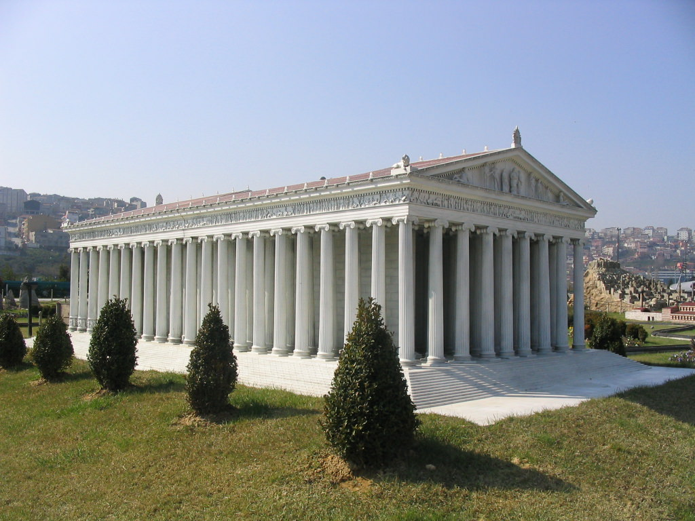
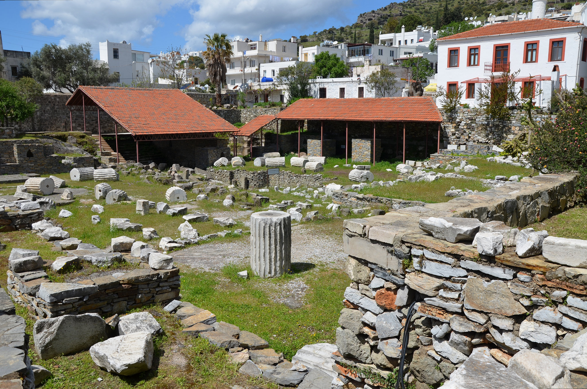
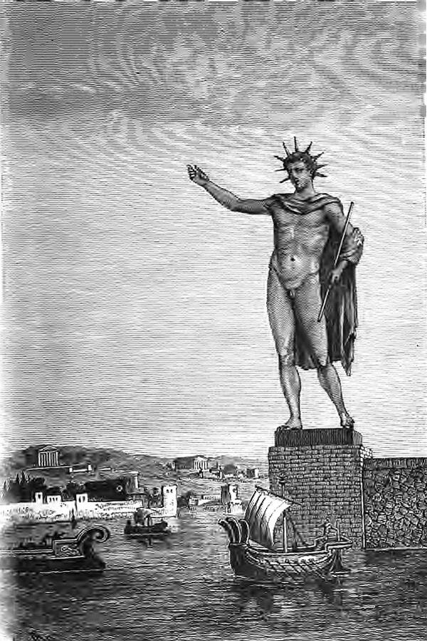
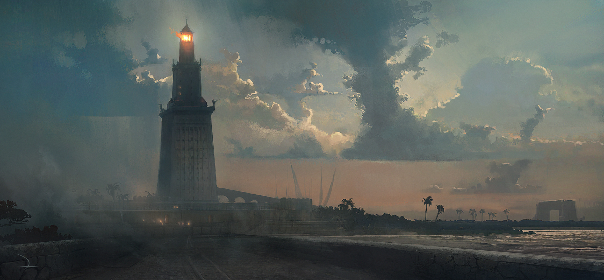

The Temple of Artemis at Ephesus was a huge temple compared to others of the time and was repeatedly broken and rebuilt until they stopped rebuilding it. now very little remains of this temple which was huge for the time.
The Mausoleum at Halicarnassus was a tomb built for the ruler of Caria; Mausolus. This tomb was so enormous and beautiful the term mausoleum is now used for any large funeral. similarly to the Statue of Zeus, the Mausoleum was destroyed by an earthquake.
The Colossus of Rhodes was a large structure of the sun god helios. It was made out of bronze. similar to the Mausoleum and the statue of zeus, this structure was also seized by an earthquake.



The lighthouse of Alexandria was a huge lighthouse built on the edge of the city of Alexandria in Egypt. The lighthouse mysteriously disappeared and it is assumed that this was done by earthquakes.
